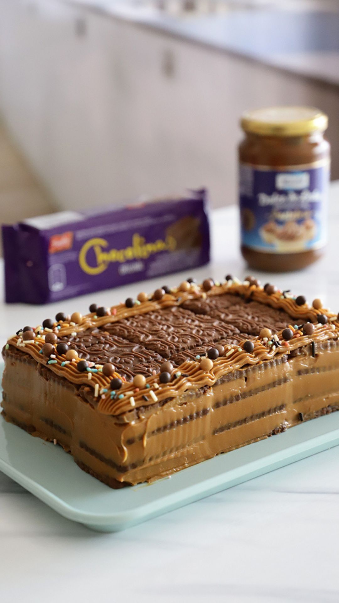

CHOCOTORTA
Ingredientes
- >400 g de galletitas de chocolate tipo Chocolinas
- 500 g de dulce de leche repostero
- 500 g de queso crema
- Café fuerte (para mojar las galletitas)
- Chocolate rallado
- Cacao amargo o chips de chocolate (opcional, para decorar)
Pasos
Mezclar la crema: En un bol, batí el dulce de leche con el queso crema hasta que quede una mezcla suave y
homogénea.
Mojar las galletitas: Prepará un café fuerte (puede ser con un poco de azúcar si preferís). Pasá rápidamente las
galletitas por el café (¡sin dejarlas mucho para que no se rompan!).
Armar la torta:
En una fuente rectangular o cuadrada, hacé una base con las galletitas mojadas.
Encima, poné una capa de la mezcla de queso y dulce.
Repetí capas de galletitas y crema hasta terminar.
Terminar y decorar: La última capa tiene que ser de crema. Podés decorar con cacao amargo, chocolate rallado,
chips o lo que más te guste.
Enfriar: Llevá la torta a la heladera por al menos 4 horas (lo ideal es de un día para el otro, así se asienta
bien).